mountain-summer


Runtime line parity 0

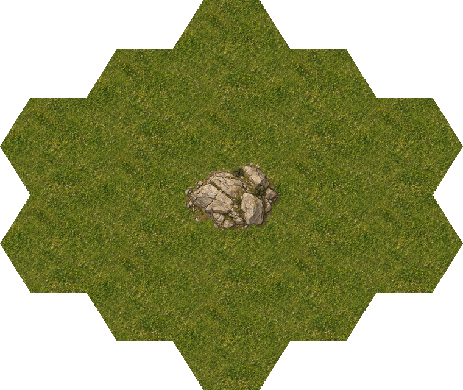

Runtime line parity 1


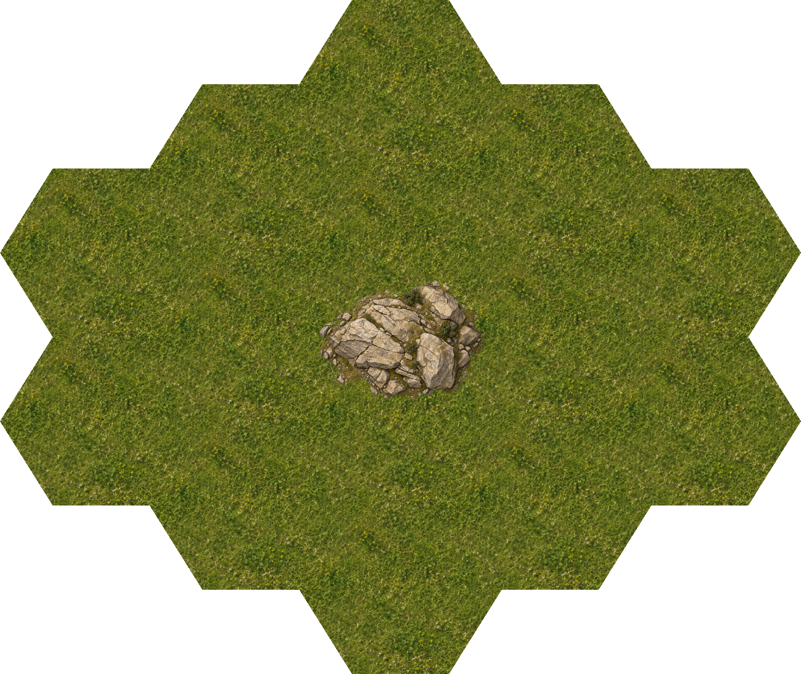
Current scene refresh · 2026-10-20: RefDesign materials and rebuild details · Current art and generation prompts · PULSE: DOS / Amiga, 1× / 2× / 4× and game captures.
Two new continuous seasonal masters supply eight adjoining quarters and two standalone mountain tiles. Low fractured rocky outcrops, shared ground, whole-scene Lanczos resizing and complementary polygon cuts at 2×/4×.
RefDesign summer and winter masters replace the earlier ridges. The game and PULSE choose complete compounds or isolated outcrops from map contexts; final user visual approval remains open.
Review and verification · Geometry and campaign exception · Terrain · Manifest




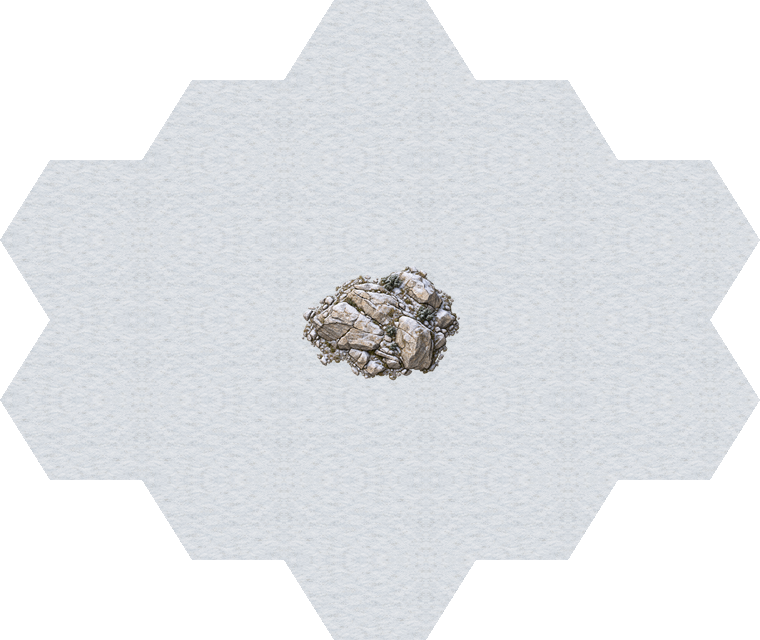


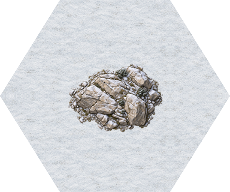
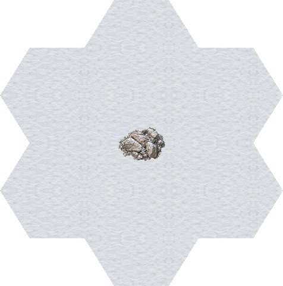


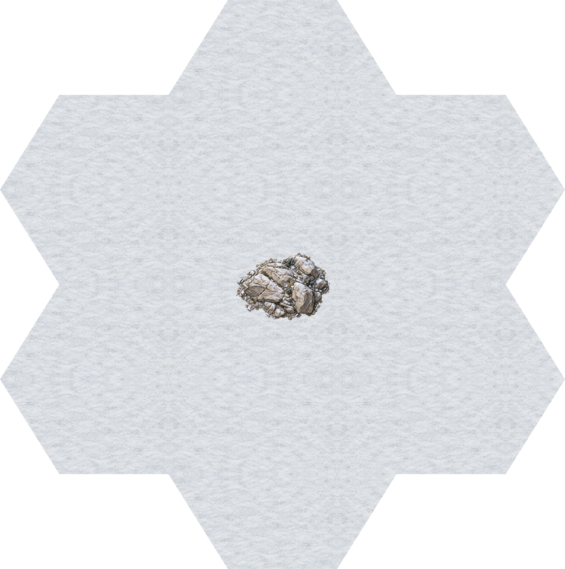
Level 3, zero-based line21/column6: select standalone mountain_w for isolated mountW_w. Eight actual campaign cells include the nearby road14 and road124 overlays. Stable IDs, campaign and rules are unchanged; runtime adapter remains open.
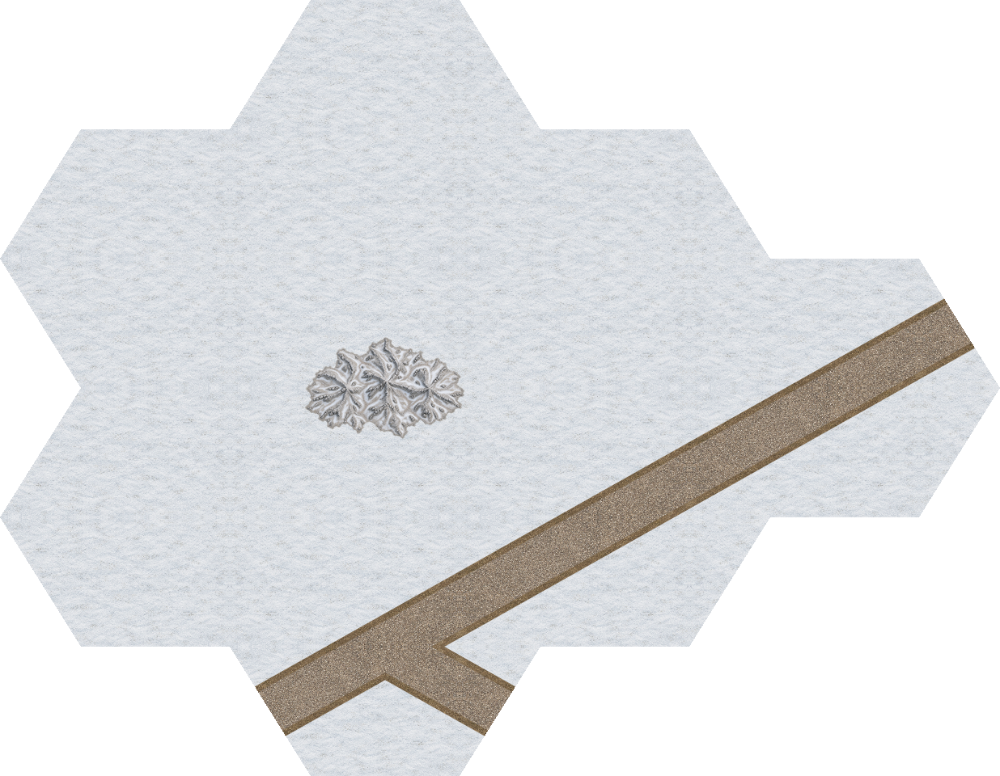
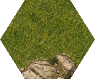
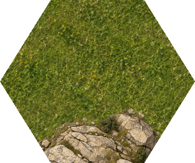
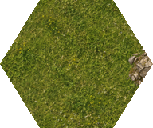
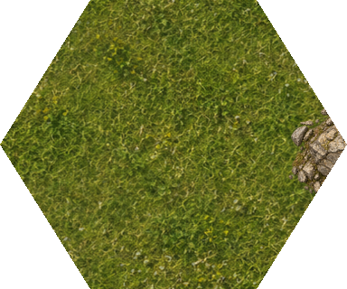
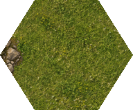
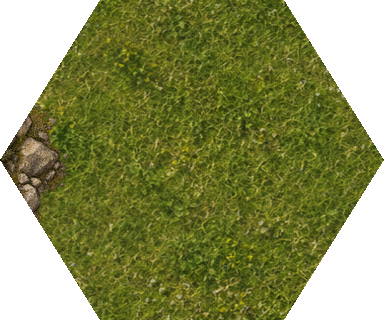
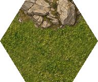
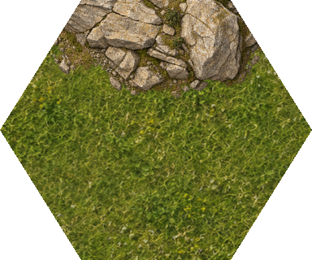
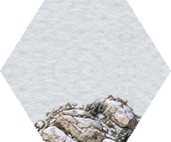
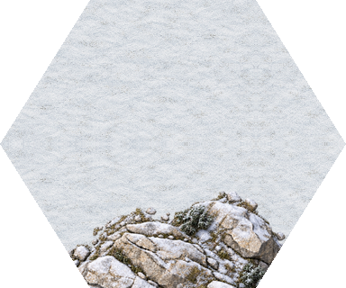
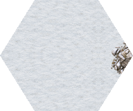
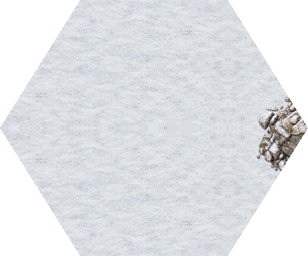
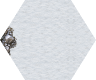
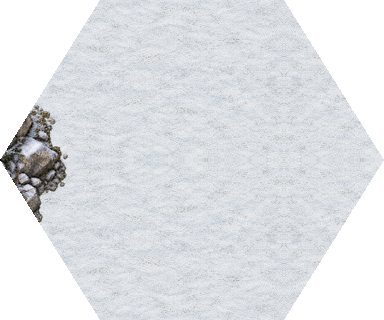
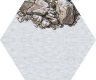
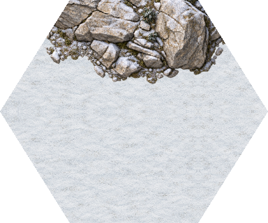
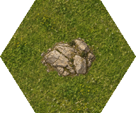
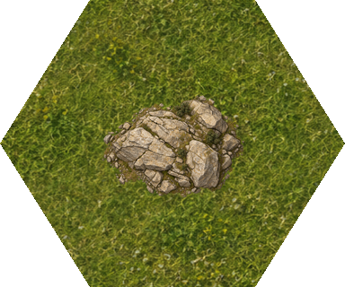
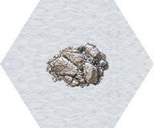